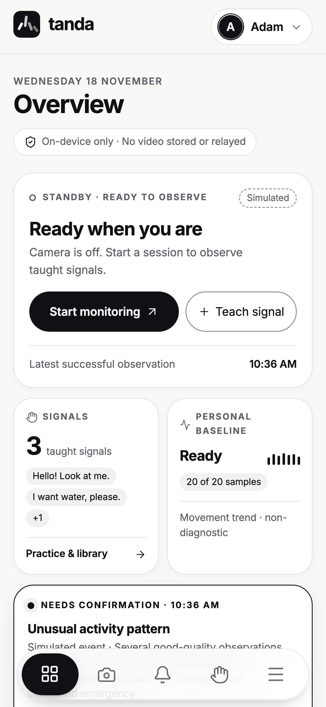

INTRODUCING

A little more context.A better-informed approach to care.
An assistive intelligence platform that helps caregivers understand observable activity, personal patterns and events that may deserve attention.